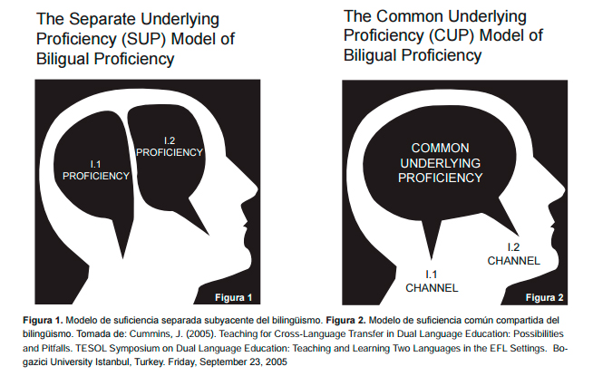
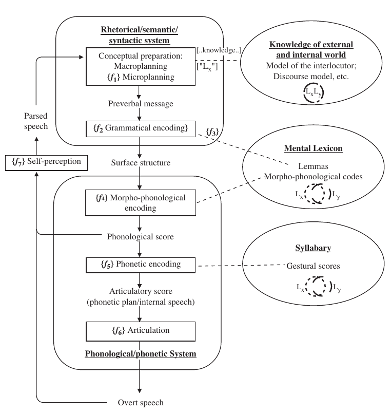

3 Euskal Hezkuntza Sistemako Eleaniztasuna: Diglosiatik Elebitasunera; eta handik Eleaniztasunera
Baliabideak: (Cummins, 2000, 2005; De Bot, 1992; Diaz de Gereñu Lasaga et al., 2021; Larrañaga et al., 2005; Maia, 2014)
Euskal hezkuntza sistemaren eleaniztasunaren historia eta oinarri teorikoak aztertzen dira. Ikasleek euskal hezkuntza sistemaren errealitatean hizkuntza erabilpenaren eta gizartearen eraginaren analisia egiten dute.
Diglosia eta eleaniztasunaren azterketa: Ikasleek, talde txikietan, euskal hezkuntza sistemaren errealitatean diglosia eta eleaniztasunaren arteko aldeak aztertuko dituzte. Euskal hezkuntza sistemako hizkuntza ereduak: Ikasleek, talde txikietan, euskal hezkuntza sistemako hizkuntza eredu bat aukeratu eta horri buruzko azterketa txostena idatziko dute.
3.1 Sarrera
Euskal Herriak hezkuntza sistemaren garapenean izan duen ibilbidea ez da lausoa izan, ezta laua ere. Historikoki, euskal hezkuntza sistema hainbat aldaketatan eta erronka handitan murgilduta egon da, batez ere hizkuntza politikaren eraginagatik. Euskal hezkuntza sistemaren eleaniztasuna, hau da, hainbat hizkuntza erabiltzea hezkuntza prozesuan, bereziki euskara eta gaztelania, sistemaren garapen historikoan eragina izan duen faktore garrantzitsua da.
Euskal hezkuntza sistemaren garapen historikoak erakutsi digu nola euskara, gure hizkuntza jatorrizkoa, hezkuntza prozesuan sartu den, eta nola hizkuntza politikak, bai estatukoak bai autonomikoak, eragina izan duten hizkuntza erabilpenaren eta hezkuntza ereduaren definizioan. Gaur egun, euskal hezkuntza sistema eleaniztasunaren erronkaren aurrean dago, hau da, nola integra daitezkeen hainbat hizkuntza hezkuntza prozesuan modu eraginkorrean.
Beti ere badugu beste zalantza nagusi bat. Hitz egin ote dezakegun “Euskal Hizkuntza Sistema” batez, ala askoz egokiagoa ez ote litzatekeen Euskal Herrian elkarrekin eta elkarren ondoan garatzen diren hezkuntza sistemez aritzea.
3.1.1 Landuko diren zenbait puntu
Euskal Hezkuntza Sistemaren Historiaz
Diglosia, Elebitasuna eta Eleaniztasuna
Oinarri Teorikoak
Hizkuntzalaritza
Psikolinguistika
Soziolinguistika
Hizkuntzaren Didaktika
Hizkuntzaren Erabilpena eta Gizartearen Eragina

Cummins (2005)

Levelt (1993)

Segalowitz (2010)